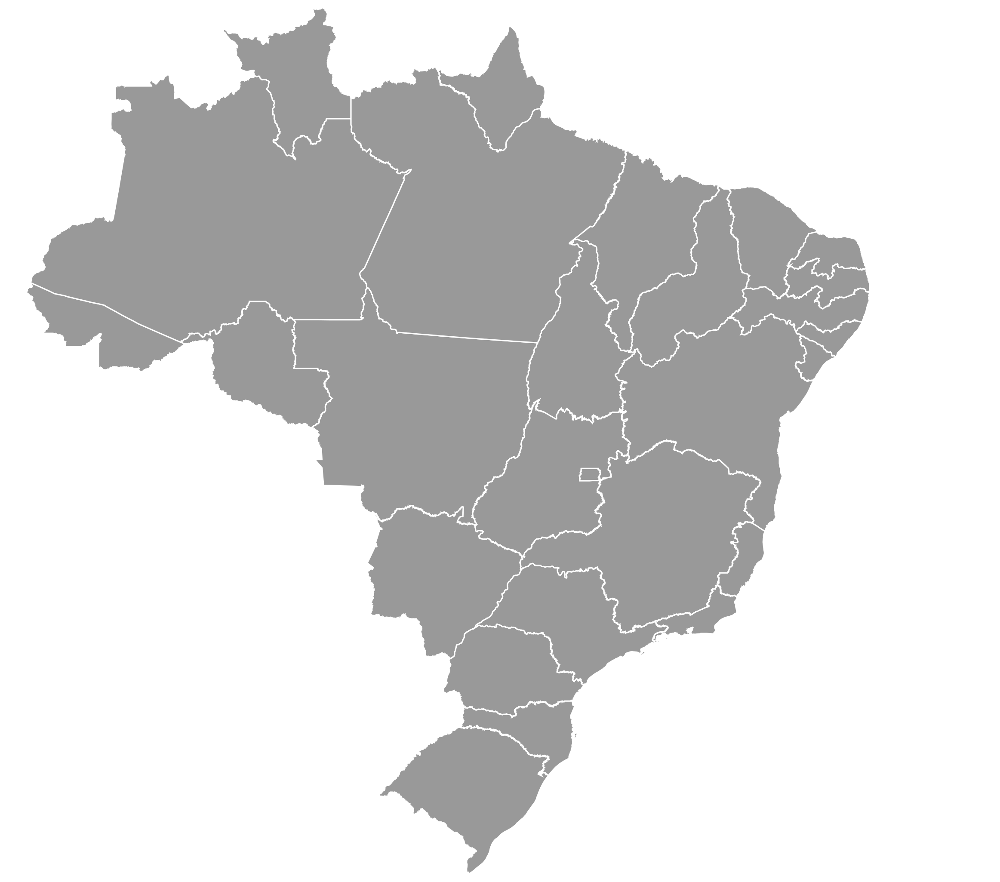

1🔽
2🔽
3🔽
4🔽
5🔽
Direito às Terras Tradicionais: Os povos indígenas têm direito de viver em suas terras de forma permanente. A Constituição de 1988 garante que essas terras sejam demarcadas e protegidas pelo governo.
Educação Diferenciada: Os indígenas têm direito a escolas dentro das aldeias, com ensino bilíngue (língua indígena e português) e conteúdo que respeita suas tradições.
Saúde Indígena: O SUS criou Distritos Sanitários Especiais Indígenas (DSEIs) para oferecer atendimento específico, respeitando suas línguas e tradições.
Representação Política: Lideranças indígenas vêm ocupando cargos como vereadores, deputados e até ministros. Um exemplo é o Ministério dos Povos Indígenas.
Valorização e Reconhecimento Cultural: A cultura indígena tem ganhado respeito na sociedade com suas festas, línguas, rituais e saberes reconhecidos como parte da identidade brasileira.